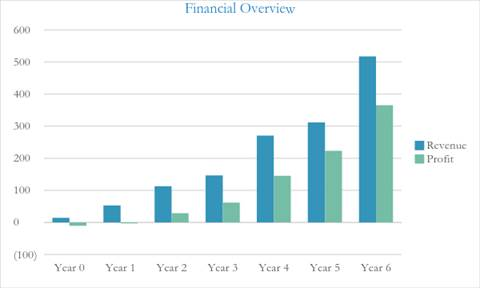
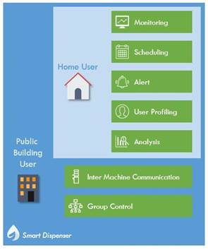
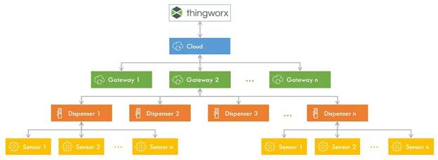
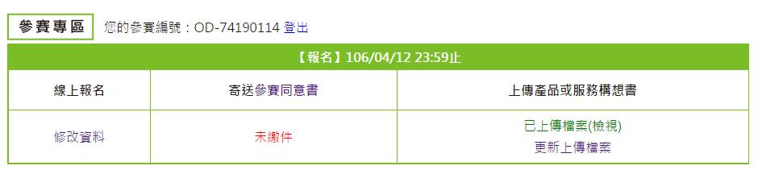

Open Data創新應用競賽
產品構想書

參賽編號 ：OD-74190114
產品名稱 ：智慧飲水機
市場族群 ：商辦大樓
目錄
內容
Open Data創新應用競賽
產品構想書
參賽編號 ：OD-74190114
產品名稱 ：智慧飲水機
市場族群 ：商辦大樓
目錄
內容
智慧飲水機是一種創新的飲水機解決方案。他提供了多元的系統給家庭或者企業使用。 傳統的飲水機在任何時間為用戶提供熱水，溫水和冷水，但是機器會隨著時間不斷地進行加熱和冷卻。更多的能源消耗對環境間接也造成傷害。 使用用戶所設定的定時器功能也未必能完全解決問題，因為每個使用者習慣都不同，隨著時間變化實用習慣也會改變。
智慧飲水機在台灣非常有市場潛力，尤其在台北市、新北市等大城市地區，客戶區分為家庭用戶以及企業用戶。在2016年，根據內政部數據顯示，台北市約有100萬家庭用戶，新北市有150萬家庭用戶。我們可以假設只有一小部分家庭使用智慧飲水機，因為飲水機售價昂貴，且會消耗大量電能，因此，透過推動具有節能環保價值的智慧飲水機，更多家庭會願意使用智慧飲水機。另一方面，大多企業用戶已經有使用飲水機 ，所以更容易實現智慧飲水機概念。
智慧飲水機為家庭用戶以及企業用戶提供不同的服務功能，兩種用戶都會提供管理系統，管理系統功能提供電能消耗狀況、機器狀態、使用行為、偏號設定等訊息。智慧飲水機將與飲水機廠商合作，在現有產品上組裝系統，並以相同的機器結構銷售產品。

圖1. 智慧飲水機商業模式概要
智慧飲水機，富含著高價值性後端系統，提供服務給予飲水機製造商與用戶。同時，傳感器需透過製造商以標準化規格，進行建置，以達到產品一致性，提高數據分析準確性。智慧飲水機將以服務多樣性進行分類，用戶大致上可區分為兩類：家庭與企業，基本上家庭用戶不需額外負擔基本服務使用費用，但企業用戶通常考慮到更完善管理機制(例如:用電管理、群組化管理等)，則需額外負擔服務費用。事實上，不管是家庭或是企業都將受益匪淺，根據統計，每台智慧飲水機每天可以節省的電費約60元，是一筆相當可觀的費用。

智慧飲水機的關鍵價值在於節約能源和環保。它改變了家庭用戶高耗電量的趨勢，並且幫助公共建設節省更多的能源，因為一棟建築可能有一個以上的飲水機。智慧飲水機的獨特關鍵特性是基於IoT技術，使用戶數據流動和分析，以提供高效用、價值的解決方案。透過Thingworx雲端平台管理，智慧飲水機能夠根據用戶行為實現良好的機台運作。此外，使用智慧飲水機上的嵌入式傳感器，系統可以方便地檢測機器運作狀況，預測維護時程。總而言之，智慧飲水機在各類方面都優於傳統飲水機。
智慧飲水機市場價值有相當可觀的潛力。一旦開始運行，新用戶的加入將會帶來等值的利潤。第一年的收入將達到1400萬新台幣，到三年前達到1.12億新台幣。智慧飲水機初始投資約1000萬新台幣，而投資回收期則為14個月。

圖3. 收益
智慧飲水機的商業模式分為兩個不同用戶，家庭用戶和企業用戶，智慧飲水機系統為家庭用戶提供即時監控、休眠排程、異常告警、匯集用戶行為以及分析功能，而企業用戶除了家庭用戶所擁有功能外，還添加機器群組化概念，實現機器間通訊，群組化控制功能。此商業計畫使用智慧傳感器、智慧閘道器、Web雲端平台，以提供一整套緊密結合的系統架構。

圖4. 智慧飲水機監控系統
|
智慧飲水機提供不同分級制度的使用方案：家庭用戶、企業用戶。 |
● 家庭用戶
為家庭用戶提供預設系統功能，用戶可在首次安裝時選擇自己喜歡的選項，往後隨時可進進行調整。
● 企業用戶
企業用戶的系統能夠分析使用者行為，並使用數據挖掘工具為智慧飲水機提供更有效率以及節能的操作方式。這也使得機器間通訊能夠使一台機器在同群組下相互控制，因為公共建築都擁有多台機器，這將能與企業企業用戶完美結合。
● 即時監控與診斷
藉由嵌入於智慧飲水機的傳感器，為用戶提供各類監控服務，包含當前機器狀態（開或關）、當前狀態（加熱或冷卻，溫度等）、儲水能力及功耗情形。智慧飲水機監控系統提供網關在系統中所連接的飲水機列表，方便即時查閱各節點資訊，也可藉由3D透視圖管理各層樓機台運作狀況。
● 水質管控
智慧飲水機將協助解決健康和安全相關問題，透過附著於飲水機自來水輸入管道上的傳感器，進行水質檢測，系統將自動評估大腸桿菌和其他細菌是否超標，並依照標準流程，進行消毒。
● 排程管理
智慧飲水機監控系統將管控飲水機的加熱和製冷調度時間。不僅如此，考慮到每個季節的調整冷熱水儲存的時間差異，額外設置睡眠時間表，以達到能源最高使用率，避免不必要之浪費。
● 告警與預測機制
智慧飲水機藉由傳感器，監測各類數據，建構告警系統，當飲水機出現異常狀況時即時通知用戶（例如：功耗太高，熱水水位過高...等）。同時，也導入預測性維護，提供完善維護機制，即時維護，減少損失。
● 客製化服務
智慧飲水機會根據用戶行來提供客製化服務。系統將透過機器學習技術，了解用戶日常習慣，預測有效且便利操作方式（例如：用戶醒來時間、用戶泡茶時間、運動中心附近的飲水機往往會提供更多的冷水...等）。
● M2M
當每個飲水機連接到同一台服務器時，可以在某特定範圍內啟用M2M通訊。飲水機可以相互溝通與配合，不但達到節約能源，也滿足用戶的飲水需求。例如，在學校的宿舍裡，每個樓層都有3個飲水機。我們可以排定每個飲水機所運行的時間，分別只有熱水或冷水，提供完善協同機制，達到最高成效。
為了實現所有功能，我們開發基於Thingworx平台的web平台應用程序，並持續開發系統模塊。
|
系統模塊分析用戶行為，Thingworx平台使用戶能夠執行監控、告警和排程任務。 |
透過基於Thingworx平台適當開發的網路應用，用戶可以輕鬆的管理自己的飲水機，作為企業管理者，還可對所有飲水機進行群組控制，方便用戶使用多個模塊功能，包括監控、告警和排程任務等。
智慧飲水機系統在家庭用戶以及企業用戶將略有不同，主頁面部分提供系統當前狀態、使用情況和警報。

圖5.主頁面功能
此外，企業用戶管理者能夠控制特定群組飲水機，廠商可以定期檢修保養飲水機以提供更良好的客戶服務。

圖6. 異常檢修管理頁面
智慧飲水機，建置各類傳感器，藉由LoRa傳輸技術，將各節點所接收的數據傳輸到LoRa Gateway，再傳輸至Thingworx雲端平台進行監控與分析。採用LoRa通訊技術作為傳輸，主要考量到企業部分飲水機建置於地下室，通訊效果不佳，長距離必然是建置項目預期解決的問題之一。另一方面，如果採用現有的行動網路無線傳輸技術，將會使得裝置經常需要更換電池，假如採用 LoRa 無線技術，維護（更換電池）的頻率大幅減少。

圖7. 智慧飲水機監控系統網路架構
智慧飲水機藉由傳感器獲取相關監測數據。基本上，每個飲水機將有3個主要儲水區域，熱水箱、溫水箱、冷水箱，溫度傳感器放置在對應水槽中。水位傳感器則依附在飲水機總進出水位上，以檢測供水狀態（高，中，低，空）。水流傳感器，用於檢測和控制進入水箱的流量及環境傳感器(例如：PM2.5和濕度傳感器)。水質傳感器，定期檢測大腸桿菌。紅外傳感器，用於檢測附近的用戶飲水機。
|
智慧飲水機主要由基本傳感器組成，用於獲取數據並通過雲傳輸，以便後續在Thingworx平台中進行分析。 |
智慧飲水機可透過API授權，與資料庫連接收集數據，透過REST API，能夠對資料庫查詢較大量數據，避免系統性能下降。而對於跨平台取資料，系統可以使用CSV文件彼此傳輸資料。
透過使用Thingworx平台，來自對傳感器的實際數據進行分析，在這部分中，平台可以使用數據挖掘與機器學習技術，來實現分析功能，因此，系統可以確定各別飲水機的使用者習慣，例如飲水機的尖峰時間、每個時段熱水供應水平等。
基本上，智慧飲水機監控系統將授權給飲水機製造商，以合約制計價。如果自己製造飲水機需要花費大筆費用，不符合經濟成本。
然而，目前為止，我們的目標尚未完成，我們需要持續與客戶保持合作關係，提供完善且穩定系統，為家庭或公共建築的用戶提供每月服務。
潛在客戶主要為家庭和公共建築，根據內政部統計，假設只有5％的家庭和30％的公共建築將使用智慧飲水機，而每個公共建築平均將會有10個飲水機。


|
|
資料集提供機關名稱 |
資料集名稱 |
資料集連結 |
|
資料來源 |
行政院環境保護署 |
臺北市公共場所飲水機資訊
|
http://data.gov.tw/node/35229 |
|
資料來源 |
雲林縣環境保護局 |
雲林縣公共場所飲水機資訊
|
http://data.gov.tw/node/41860 |
|
資料來源 |
臺中市政府環境保護局 |
臺中市轄內設置飲水機供民眾使用之處所
|
http://data.gov.tw/node/31346 |